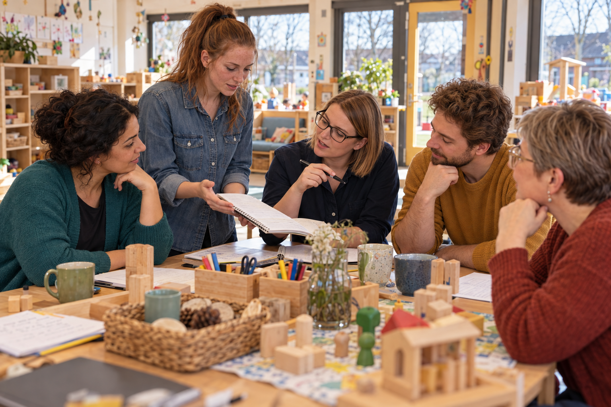

Handlungssituation
Ihr nehmt an einer Teamsitzung der Pfützenhüpfer teil.
Euer Praxisort: Kindergarten Regenbogenland Aurich – Gruppe Pfützenhüpfer

Euer erster Praxisort ist der Kindergarten Regenbogenland in Aurich. Die Einrichtung liegt in einem gemischten Wohngebiet. Wenn ihr durch den Eingang kommt, seht ihr Kinderzeichnungen, Fotos aus Projekten und Informationen für Familien. Vom Flur gehen die Gruppenräume ab. Bei den Pfützenhüpfern findet ihr eine Bauecke, einen Rollenspielbereich, Bilderbücher und Tische zum Gestalten und Experimentieren. Eine breite Tür führt in den Garten. Ein kleiner Nebenraum bietet Platz für Gespräche, Rückzug oder eine Kleingruppe. Ganz in der Nähe liegt das Leitungsbüro.
Ihr begleitet Kinder, die ihre Interessen auf unterschiedliche Weise zeigen: Theo beschäftigt sich gern mit Bauen, Martha mit Bilderbüchern; Leyla sucht häufig Emilias Nähe. Im Tagesablauf wechseln gemeinsame Zeiten mit Spiel, Bewegung und selbst gewählten Beschäftigungen. Die Kinder bringen eigene Ideen mit, Familien stellen Fragen, und im Team werden Beobachtungen besprochen. Ihr seid während eurer Praxisphase dabei, unterstützt vereinbarte Tätigkeiten und bringt eure Wahrnehmungen ein. Nicht immer sehen alle Beteiligten dasselbe. Beim Ankommen hört ihr kurze Absprachen zwischen Tür und Angel; in der Teamsitzung ist Zeit, genauer auf einen Vormittag zurückzublicken.
Menschen, denen ihr begegnet
Hier arbeitet Hamide, die die Einrichtung leitet und zugleich Justus’ Mutter ist.
Anastasia ist die Gruppenleitung der Pfützenhüpfer. Sie fragt häufig nach, worauf eine Einschätzung beruht.
Benedikt, sozialpädagogischer Assistent, findet im Alltag schnell praktische Lösungen.
Theresa, Erzieherin mit heilpädagogischer Weiterbildung, schaut aufmerksam auf die Möglichkeiten der Kinder und auf ihre Umgebung.
Emilia ist 18 Jahre alt und seit vier Monaten im Freiwilligen Sozialen Jahr. Nach dem Abitur sucht sie noch ihren beruflichen Weg. In ihrer Freizeit klettert sie gern.
Eure Situation
Ihr seid für eine erste Praxisphase im Regenbogenland eingesetzt. Emilia bindet euch in die Besprechung ein: „Ihr habt den Vormittag doch auch miterlebt.“ Sie ist seit vier Monaten hier und sagt, sie habe inzwischen „ein gutes Gefühl dafür, welche Kinder einfach mehr Konsequenz brauchen“. Anastasia fragt: „Woran genau hast du das heute festgemacht?“ Benedikt erzählt von einer Situation, in der er schnell handeln musste. Theresa möchte wissen, was die Kinder in diesem Moment gebraucht haben.
Ihr schaut auf eure eigenen Notizen. Einige enthalten Beschreibungen, andere bereits Einschätzungen. Hamide möchte für die Einarbeitung neuer Praktikumsgruppen ein kurzes Berufsprofil zusammenstellen. „Was würdet ihr jemandem mitgeben, der morgen bei uns anfängt?“, fragt sie. Emilia schaut zu euch: „Und was davon hilft mir, wenn im Gruppenraum gerade alles gleichzeitig passiert?“
Kurz prüfen · Handlungssituation
1. Sachverhalt
Hinweis
Achte auf Emilias Aussage und auf Anastasias Nachfrage nach der konkreten Beobachtung.
2. Auswertung
Hinweis
Vergleiche die Blickrichtungen von Anastasia, Benedikt und Theresa.
3. Einordnung
Hinweis
Denke an Hamides Verantwortung für die Einarbeitung.
0 von 3 Prüfpunkten verstanden.